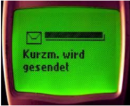

1990-1995
•Avanços tecnológicos:
• 1991: Surge o Linux, baseado no Unix

• 1994: SMS traz o texto aos celulares;

•Filmes/desenhos/séries:
• 1990: Demi Moore e Patrick Swayze vivem uma história de amor que ultrapassa os limites da vida, em Ghost (Ghost - Do Outro Lado da Vida), que dá a Whoopi Goldberg o Óscar como melhor atriz coadjuvante.
•Músicas de sucesso:
• 1991: começa a segunda edição do festival musical Rock in Rio.
•Acontecimentos diversos:
• 1991: Ayrton Senna conquista o tricampeonato mundial de Fórmula 1